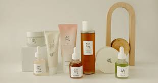

A rotina de cuidados com a pele coreana geralmente envolve várias etapas, incluindo limpeza, tonificação, aplicação de essência, soro, hidratante e protetor solar. Essa abordagem de várias etapas ajuda a garantir que a pele esteja adequadamente limpa, hidratada e protegida do sol e de outros estressores ambientais.
A hidratação é vista como um fator-chave. Para manter a pele saudável e com aparência jovial, os produtos de cuidados com a pele coreanos geralmente são formulados com ingredientes que ajudam a hidratar a pele, como ácido hialurônico, aloe vera e glicerina.